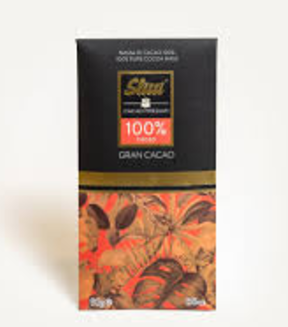
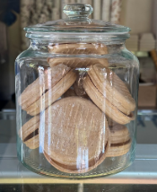

Storytelling sul brand toscano Slitti, gamma premium (tavolette, mini cakes, praline, dragée, creme) e la
procedura Yo-Yo per servire il biscotto farcito con gelato.
Slitti & Yo-Yo
Cioccolato & snack
Montecatini TermeSince 1969
Timeline essenziale
Luciano Slitti apre come torrefazione nel 1969. Nel 1990 Andrea introduce il cioccolato e, insieme al fratello
Daniele, conquista premi internazionali (Grand Prix 1994, Eurochocolate 1996, miglior chocolatier italiano 2008).
1. Valorizza la selezione rigorosa di materie prime.2. Racconta premi e heritage toscano per giustificare il posizionamento premium.3. Invita il cliente ad assaggiare abbinando caffè o gelato.
Usa la palette blu/pink per creare piccole schede storytelling accanto all'esposizione.
TavoletteGran Cacao
Tavolette LatteNero & Gran Cacao

Tavolette Slitti in diversi profili di cacao (45%, 51%, 73%, 82%, 100%) + Caffè Latte aromatizzata con arabica tostata.
Spiega il blend: cacao + cacao butter per morbidezza, equilibrio tra zuccheri e latte (nei profili più dolci).
Conservazione: 16-18°C, lontano da luce diretta e odori forti
1. Chiedi preferenza cliente (latte/dark).2. Suggerisci pairing con espresso o cappuccino.3. Ricorda la confezione regalo e shelf life lunga.
Esporre sample aperto per mostrare pattern; mantieni stock FIFO.
Mini cakesHazelnut / Almond
Minicake
Mini cake Slitti con materie prime d'eccellenza: nocciole Tonda Gentile (Langhe) e mandorle Avola (Sicilia).
Tre varianti: latte nocciole, fondente mix fruit, fondente mandorle. Servi a temperatura ambiente o leggermente tiepida.
Servizio: temperatura ambiente oppure 10 secondi microonde per esaltare profumi
1. Spiega differenza ingredienti (Tonda Gentile, mandorla Avola).2. Servi a temperatura ambiente o leggermente tiepida.3. Consiglia accompagnamento con crema spalmabile Slittosa.
PralineDragée
Praline & Dragée
Praline Origin e Irish Coffee (0,9% alc) + dragée su base di pistacchio, mandorla, nocciola, cranberry, arachidi caramel, amarene e arabica.
Ogni dragée racconta la propria provenienza: Bronte, Avola, Langhe. Mantieni sempre temperatura fresca e luce bassa.
Praline: Origin, Irish Coffee (0,9% alcol), Passion Fruit
Provenienza: evidenzia su lavagnette (Bronte, Avola, Langhe) per valore
1 · Mantieni temperatura fresca e luce bassa.2 · Offri assaggio se apri una confezione campione.3 · Pairing suggeriti: pistacchi con Pistachio Hot, ginger con chai.
Display: mostra texture con spatola monouso per igiene
1 · Mostra texture con spatola monouso per igiene.2 · Suggerisci su crepe, waffle, panettone o gelato.3 · Posizionamento strategico vicino cassa per impulse buy.
Yo-YoGelato Sandwich
Yo-Yo

Due biscotti morbidi che racchiudono uno strato di gelato. Disponibile in vari gusti.
Conservazione: -18°C (freezer)
Servizio: Tovagliolino o piattino
Varianti: Classico, Pistacchio, Cioccolato
1 · Preleva dal freezer al momento dell'ordine.2 · Servi immediatamente per evitare che il gelato si sciolga.3 · Suggerisci come snack veloce o dessert da passeggio.
Setup & Conservazione
Apertura · Display · Dati tecnici · Storage · Chiusura
AperturaDisplayYo-Yo
Allestimento Yo-Yo (banco)
Yo‑Yo al centro sopra la vetrina: area sempre pulita e rifornita (mai vuoto visivo).
Posizionamento: centrale, sopra la gelato vetrina
Hygiene: superficie sempre free of crumbles
Replenish: riempi/rifornisci ogni volta (mai “vuoto” visivo)
1 · Pulisci l'area (zero briciole).2 · Posiziona la stazione Yo-Yo in punto visibile e centrale.3 · Prepara wafer/tool e guanti monouso per il servizio.
Il Yo-Yo vende anche “con gli occhi”: non lasciarlo mai disordinato.
SettingToolGloves
Stazione e strumenti (standard)
Stazione pronta = servizio veloce e pulito: guanti, tool e wafer già a portata.
Guanti: indossali prima di maneggiare wafer/Yo-Yo tool
Tool: appoggia Yo-Yo tool su un piatto con 2 wafer pronti
Flow: prepara wafer → gelato → chiusura, senza “giri” inutili
1 · Guanti on.2 · Wafer sul tool, una base pronta.3 · Chiudi subito dopo porzionatura per evitare overflow.
Ordine fisso = velocità e costanza tra team.
Dati tecnici80/90 gPrecisione
Porzionatura gelato Yo-Yo
Porzione 80–90 g: gelato dentro i wafer, bordo pulito (zero overflow).
Porzione target: 80–90 g
Scoop: usa il gelato con ice-cream scooper
Controllo: non overflow (è un difetto visivo + sporca la stazione)
1 · Posiziona il gelato centralmente.2 · Chiudi con il secondo wafer e verifica bordo pulito.3 · Se sporchi: pulisci subito (non “rimandare”).
Precisione oggi = meno sprechi domani.
ConservazionePan methodLabel
Pan storage method (etichettatura)
Pan storage: etichetta sempre (data/contenuto). Label chiare = meno errori.
Etichetta: data + contenuto + responsabile (secondo standard store)
Non miscelare wafer diversi nello stesso contenitore
Controllo briciole: ogni refill = quick wipe
1 · Applica label sempre prima di mettere in posizione.2 · Controlla integrità wafer (no rotti in vista).3 · Refill = anche pulizia: togli crumbles e residui.
ChiusuraPuliziaRiordino
Chiusura stazione Yo-Yo
Chiusura: pulisci, riordina e lascia la stazione “apertura‑ready”.
Rimuovi crumbles e residui dalla superficie e dagli strumenti
Riponi wafer e tool secondo procedura (con label se usi pan storage)
Check rapido: stazione “apertura-ready”
1 · Pulisci e asciuga strumenti e area.2 · Riponi stock con label corrette.3 · Lascia il piano libero e ordinato.